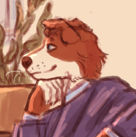
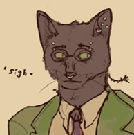

Profile is w.i.p. and the information you see here is always up to change. Feel free to ask stuff! :]
Content warnings [click to view]
- A cop character, I guess?
- Religious trauma (implied)
- Depressive/anxious/disturbing motives
- Missing person
/ last upd. 28 oct 2026
«And the dream went on forever, one single static frame
Sometimes you want to go where everybody knows your name!»
The Mountain Goats — Autoclave

| Name | Detective |
|---|---|
| AKA | Scrim |
| Gender | Sexuality | Female | Homosexual |
| Age | Mid/late 20s |
| Ethnicity | American (Alaskan) |
| Species | Border collie |
| Occupation | Well. Detective |
| Setting | America of 1990s-2000s Basically an arithmetic mean of Twin Peaks, X Files, True Detective and maybe Disco Elysium vibes put together |
| Role | Mascot! |
About
+ Optimistic, easy-going, friendly, reliable +
= Melancholic, thoughtful, nerdy, soft =
- Anxious, socially awkward, people pleaser -
A nerdy detective
Scrim is very, and I mean Very enthusiastic about her job and genuinely tries her best, as she does still believe in idealistic stuff like helping people. Although her job is very important to her, she is prone to spending way too much time with her head in the clouds or sidetracking or going massively off-topic, which she sincerely apologises for and at least tries to act more serious and presentable. But honeslty she personally finds looking trustworthy and not dangerous to people who might need her help more valuable than a possible tough fascade.
She's basically a hopecore idiot with a heart of gold who loves working with her bestie/detective partner, travelling and talking with people. And music and obscure nerdy bullshit and many other things, honestly. She comes from Palmer, Alaska, and she's left her hometown as soon as she had a chance. Although she loved its nature, there probably should be a reason why she doesn't like to talk about her youth much, or why she doesn't seem fond of the idea of returning home. And, well, she may or may not went missing in Alaskan forests one day, investigating an odd cold case about a missing little girl, just to come back diffirent one day..
Design notes
- Build notes: 5'5''| 168 cm, average height and build. May be depicted with simplified/flat chest just like all of my anthros, any stylistic choice here is fine by me.
- Has diamond-shaped spots on her neck (right-sided) and in ribs-area (left-sided) + a twin mole-like white spots on her left wrist
- Her 'bangs' (well, the fur between the ears, in her case) are normally combed back!
- Her tail is very fluffy :р
- Scars: Nothing significant, feel free to draw her with random scratches!
- Clothing style:
- Might be both classical or more casual, but always 1980-2000s-esque! Feel free to play with design, colors and models, just avoid putting her into a dress/skirt and you'd be fine (gnc/masc-leaning presentation is an important part of her character basically). I like dressing her in purple and giving her a cool beige trench coat, though!
- Acessory-wise, she wears a simple black ring on the thumb or index finger of any hand (sometimes she fiddles with it when nervous/bored/needs to focus) and may wear a wristwatch.
- Impression / mannerisms:
- Well-meaning and upbeat, but somewhat socially awkward demeanor. Often looks tired and sleepy (her somewhat half-covered eyes are Not helping)
- Touches the back of the head a lot when frustrated or nervous or thinks hard.
- She can raise any of her ears if she wants to (mostly if tries to focus on smth or if she’s a bit surprised dunno). Theoretically both of her ears may be up, but, like, on a very rare occasion (of she’s like Very surprised or scared)
- Musical instrument: She plays acoustic guitar! The most basic design you can imagine lmao, not something significant or set in stone :D
- Weapon notes: She has a revolver, I think? May or may not specify a model later, but that's not something important anyway. She doesn't like using it.
- May be depicted either digitigrade or plantigrade, I don't have any preferences here really.
- There's no need to colorpick from her references, just try to keep the approximate colors/shades ratio recognizable and you cool.
Likes
- Feeling helpful and important :]
- Playing guitar! She's honestly rather mediocre, but it doesn't bother her much as it's literally just a self-indulgent chill hobby of hers. + She's interested in music in general (various rock subgenres, Especially psychedelic rock, jazz and Lowkey country music in first place I think. also post-punk and goth rock when she hates her supid puppy life)
- Making lists! And systems in general. She loves it when stuff is organized nicely
- Comics, she reads, like, Lots of them. And collects merch with her favorite characters. As a treat. Somewhat a secret for most of people she's not close with. (loses her serious adult mask the very moment someone around mentions one of her interests. She NEEDS to yap.)
- Cryptozoology and conspiracy kind of stuff [tv shows, magazines, you name it]. Doesn't believe any of this to be real, but genuinely enjoys it in a guilty pleasure way.
- Coffee! (she's coffee addict and is barely able to function without it 💔)
- Sweets like chocolates and donuts + probably any kind of junk food yeahhh
- Birds...She barely knows much about them, but even plain watching them brings comfort and makes her happy.
Dislikes
- Very religious people
- Her hometown. Though it's more of a bitter(sweet) feeling than hatred. She loves it's nature and feels very nostalgic about it, but the amount of unomfortable memories and awkward acquaintances from the 'past life'...ain't helping.
- Cruelty/violence. And abuse of authority
- Nightmares
- Failed social interactions egh
- Onion..
- Fire. She has a moderate pyrophobia, and while she can tolerate being around things like candles [although she does feel a bit anxious even then], bonfires and, especially, uncontrolled fire make her feel very uneasy to say the least.
- Driving. She can drive (and has to. as an American citizen lmao) but doesn't really like to. She's not a confident driver at all.
Connections

Viem / Vi
emotional support black cat of death
Her dearest best friend and detective purrtner! (My best friend's sona basically, I love their silly duo so muchhhh)
Feel free to draw her interacting with your characters if you want!
Trivia
- Motifs/associations for her are dreams with any symbols associated (sheeps. poppies. whatever), escapism/running away and colors purple and brown, emoji (emoticons specifically, :) :] :р :< and stuff), pine forests, snowy ones especially.
- Inspiration [kinlist]:
-
Dale Cooper, Twin PeaksAvery, Scarlet HollowHarry Truman, Twin PeaksViago, What we do in the ShadowsHarrier du Bois, Disco ElysiumTrant Heidelstam, Disco ElysiumFenton Crackshell-Cabrera, Ducktales (2017)Agent Copano, Common Side EffectsMitsuhiro Maniwa, Paranoia AgentMr. Orange, Reservoir dogsVincent Law, Ergo ProxyMartin Blackwood. The Magnus Archieves
- Electric Light Orchestra, The Mountain Goats, Radiohead and Placebo music in general
- Plot-wise, I don't really have much on her, as she's more of a mascot than a solid character with story behind and information set in stone. Just a silly fluffy dawg to doodle stuff with my bestie's sona And to be dramatic about. I may project some presonal stuff onto her due to her sona origin, but she's not 'literally me' kind of oc anymore. So. She's a fluffy concept for ✨vibes ✨ I'm playing dolls with.
- Keeps a personal diary and sometimes decorates it with drawings (rather poorly drawn, she's not an artist)
- Often sees extremely weird symbolic dreams or anxious nightmares (often featuring her own death or her talking to her, often dead, self). And still, she sleeps a lot.
Background picture by Aurélien Faux,
Sidebar image is from Disco Elysium (2019)